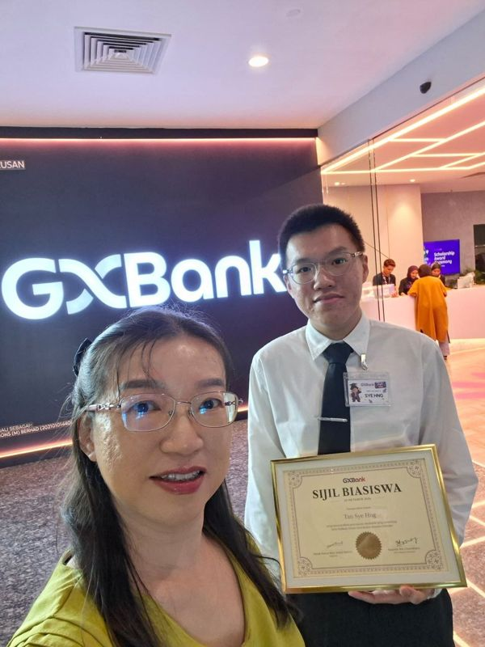

Bank Statement
Converter
From bank PDF to structured, accounting-ready data in seconds.
80%+ less manual work
SOFTWARE ENGINEER · MALAYSIA
Full-Stack · Automation · Embedded
I turn everyday friction into software that works in the real world — from business tools and automated workflows to connected hardware.
const builder = { curiosity: true, ideas: "useful", status: "shipping" }; builder.build();▌
A FEW THINGS I’VE BUILT ✳
From a tiny time-saver to a full product experience, I like making the complicated feel simple.
From bank PDF to structured, accounting-ready data in seconds.
A live cost breakdown that makes the move-in math easier to understand.
Helping families find a match — and giving managers the keys to keep profiles current.
Real contract schedule for monthly salary, Sunday allowance, SOCSO and loan repayment.
Arduino · RFID · Telegram Bot API
HTML · CSS · JavaScript · MySQL

A LITTLE ABOUT ME ✳
I’m a Software Engineer at Conzlab, building practical automation and web products for real business workflows. I’m also pursuing Software Engineering at Universiti Kebangsaan Malaysia.
I enjoy moving between layers: shaping an interface, connecting the data, automating a repetitive task, then seeing it help someone do their work a little better.
Outside web products, I explore embedded systems with Arduino, RFID, and connected tools. I’m open to software engineering roles where I can keep learning by building.
Have a project or opportunity? Let’s talk ↗MY TOOLBOX ✳
I’m happiest when a good idea makes it all the way from concept to something people can use.
Python · Java · JavaScript
HTML & CSS · SQL · Flask
Node.js · Firebase
REST APIs · MySQL
PDF parsing · Web scraping
Database integration
n8n · Odoo ERP
Docker · VPS deployment
AI-assisted workflows
Arduino · RFID
Telegram Bot API
Responsive interfaces
THE PATH SO FAR ✳
Universiti Kebangsaan Malaysia
Building a strong foundation in software design and computer science.Production workflows, ERP tools, AI-assisted content, and full-stack internal products.
Recent work includes n8n and Odoo vendor bill / expense flows, a bank reconciliation tool, and the bank statement converter.Selected for the GXBank Impian Gigih Scholarship.
Youuu.Class Enterprise · Elite Level Sdn Bhd
Teaching across age groups, coordinating interviews, and making communication count.Kolej Matrikulasi Johor · SPM 11As, SMK Dato Penggawa Timur
OPEN TO SOFTWARE ENGINEERING ROLES ✳
Have a software project or engineering role in mind? I’d love to hear from you.
tansyehng1011@gmail.com ↗